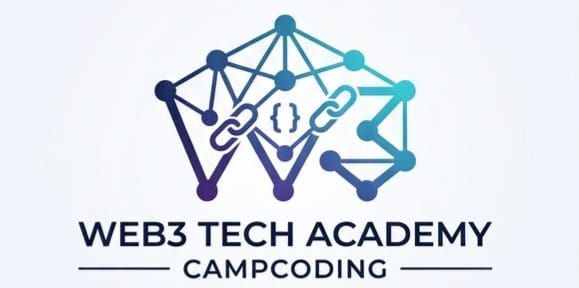

Jawab 10 soal berikut dengan benar untuk mendapatkan sertifikat.
1. Apa mekanisme konsensus yang digunakan Ethereum setelah "The Merge"?
2. Satuan terkecil dari Ether (ETH) disebut apa?
3. Apa fungsi dari "Gas" dalam jaringan blockchain?
4. Smart contract bersifat "Immutable", artinya?
5. Apa visibilitas fungsi agar HANYA bisa dipanggil dari dalam kontrak itu sendiri?
6. Apa nama wallet crypto paling populer untuk browser?
7. Library JS apa yang digunakan untuk interaksi dengan Smart Contract?
8. Apa kepanjangan dari DApp?
9. Komputer yang menjalankan software blockchain disebut apa?
10. Hacker bisa mengubah data di blockchain jika menguasai 51% jaringan. Benar/Salah?
This is to certify that
Telah berhasil menyelesaikan ujian akhir tingkat profesional dan menunjukkan kompetensi mendalam dalam teknologi Blockchain, Pengembangan Smart Contract Solidity, dan Integrasi DApp.